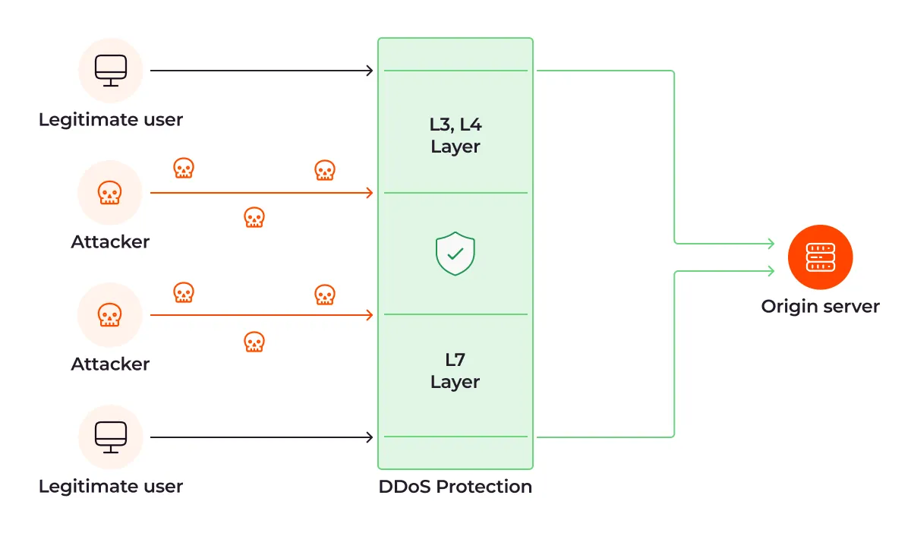

What is a DDoS Attack?
A DDoS attack, or Distributed Denial-of-Service attack, is a cybercrime that involves flooding a target with internet traffic to make it inaccessible. DDoS attacks are a type of Denial-of-Service (DoS) attack, but they are far more powerful than traditional DoS because they use multiple sources to generate exponentially more traffic. The goal of a DDoS attack is to overwhelm a system’s resources or bandwidth, making it difficult or impossible for legitimate traffic to reach its destination. DDoS attacks can have a number of consequences, including lost business, reputation damage, and a drop in legitimate traffic.

How Acronics Solutions can help you protect your infrastructure?
The scrubbing centers are connected to several service providers and have backup copies of all systems, such as cleaning servers, managing servers, data storage systems, and network equipment. The Acronics Solutions security platform guarantees no delays and no performance degradation for your digital business.BENEFITS OF ACRONICS SOLUTIONS DDOS PROTECTION
Massive network capacity
Acronics Solutions has 348 Tbps of network capacity, which is 23x larger than the biggest DDoS attack ever recorded.
Set up in minutes
Deploy Anti-DDoS protection instantly without any complex configuration. Start securing your infrastructure within minutes.
24/7 email support
Our dedicated technical support team is available around the clock to help you monitor, analyze, and mitigate DDoS threats.
Eliminate slow performance
Smart traffic routing and real-time filtering ensure your website and services stay fast and responsive even under attack.